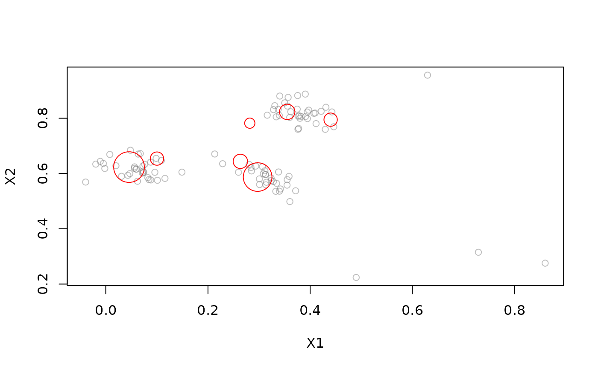
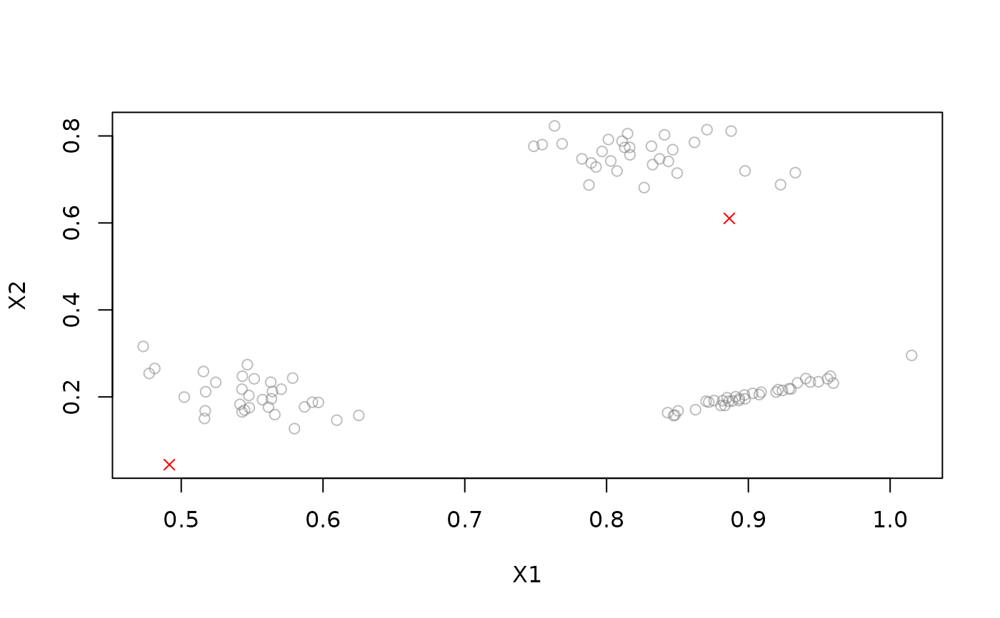

Interface to the MOA implementation of the MCOD algorithm for distance-based data stream outlier detection.
Usage
DSC_MCOD(r = 0.1, t = 50, w = 1000, recheck_outliers = FALSE)
DSOutlier_MCOD(r = 0.1, t = 50, w = 1000, recheck_outliers = TRUE)
get_outlier_positions(x, ...)
recheck_outlier(x, outlier_correlated_id, ...)
clean_outliers(x, ...)Arguments
- r
Radius used to search for neighbors.
- t
Minimum number of neighbors required for a point not to be an outlier.
- w
Sliding window width in data points.
- recheck_outliers
If
TRUE, allow detected outliers to be checked again.- x
A
DSC_MCODobject.- ...
Further arguments (currently ignored).
Identifier of the outlier to check again.
Value
An object of class DSC_MCOD (subclass of
stream::DSC_Micro, DSC_MOA and stream::DSC).
Details
The algorithm detects density-based outliers. An object \(x\) is defined to be an outlier if there are less than \(t\) objects lying at distance at most \(r\) from \(x\).
Outliers are stored and can be retrieved with get_outlier_positions() and
checked again with recheck_outlier().
Note: The implementation updates the clustering when predict() is called.
Functions
get_outlier_positions(): Returns spatial positions of all current outliers.recheck_outlier(): Re-check whether the outlier identified byoutlier_correlated_idis still an outlier. ReturnsTRUEif it is.clean_outliers(): Forget detected outliers (currently not implemented).
References
Kontaki M, Gounaris A, Papadopoulos AN, Tsichlas K, and Manolopoulos Y (2016). Efficient and flexible algorithms for monitoring distance-based outliers over data streams. Information Systems, Vol. 55, pp. 37-53. doi:10.1109/ICDE.2011.5767923
See also
Other DSC_MOA:
DSC_BICO_MOA(),
DSC_CluStream(),
DSC_ClusTree(),
DSC_DStream_MOA(),
DSC_DenStream(),
DSC_MOA(),
DSC_StreamKM()
Examples
# Example 1: Clustering with MCOD
stream <- DSD_Gaussians(k = 3, d = 2, noise = 0.05)
mcod <- DSC_MCOD(r = .1, t = 3, w = 100)
update(mcod, stream, 100)
mcod
#> Micro-cluster outlier detector
#> Class: DSC_MCOD, DSC_Micro, DSC_MOA, DSC
#> Number of micro-clusters: 7
plot(mcod, stream, n = 100)

# Example 2: Predict outliers (have a class label of NA)
stream <- DSD_Gaussians(k = 3, d = 2, noise = 0.05)
mcod <- DSOutlier_MCOD(r = .1, t = 3, w = 100)
update(mcod, stream, 100)
plot(mcod, stream, n = 100)

# Retrieve detected outlier positions.
get_outlier_positions(mcod)
#> X1 X2
#> 1 0.491609 0.04416643
# Example 3: evaluate on a stream
evaluate_static(mcod, stream, n = 100, type = "micro",
measure = c("crand", "noisePrecision", "outlierjaccard"))
#> Evaluation results for micro-clusters.
#> Points were assigned to micro-clusters.
#>
#> cRand noisePrecision outlierJaccard
#> 0.5138289 1.0000000 1.0000000
#> attr(,"type")
#> [1] "micro"
#> attr(,"assign")
#> [1] "micro"